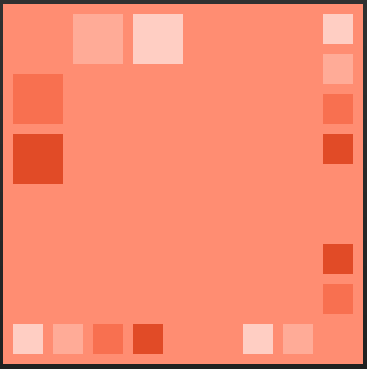
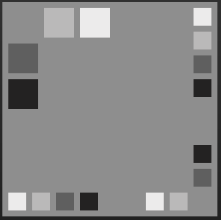

Brand Guide
Concept: My idea is to help clients to improve records and information management, to support individuals or organization’s present and future, keeping in mind the regulatory, legal, environmental, and operational requirements.
Mission: To optimize and support the clients your information, by offering a structure, policies, procedures, and processes necessary to manage all the information stored within an organization.
Goal: Help our customers optimize their information and records across their lifecycle.
Slogan: "Records organized make your life better and simple"
Colors: I choose my palette color of the software http://colorschemedesigner.com It has one main color and four subcolors and I will play with two palletes:orange-coral and greys.
These palettes represent our favorite colors Coral and Grey and we will use them as background, letters,links,etc. They symbolize our pesonality and harmony. See Below palette color.
Main Pallete  Second Pallete 
Fonts: The Lucida Sans Unicode will be used as the main font of the body and headers in different sizes.